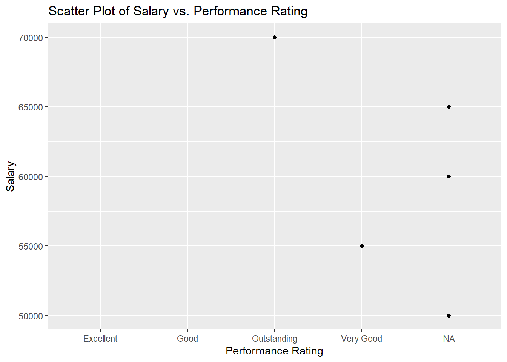
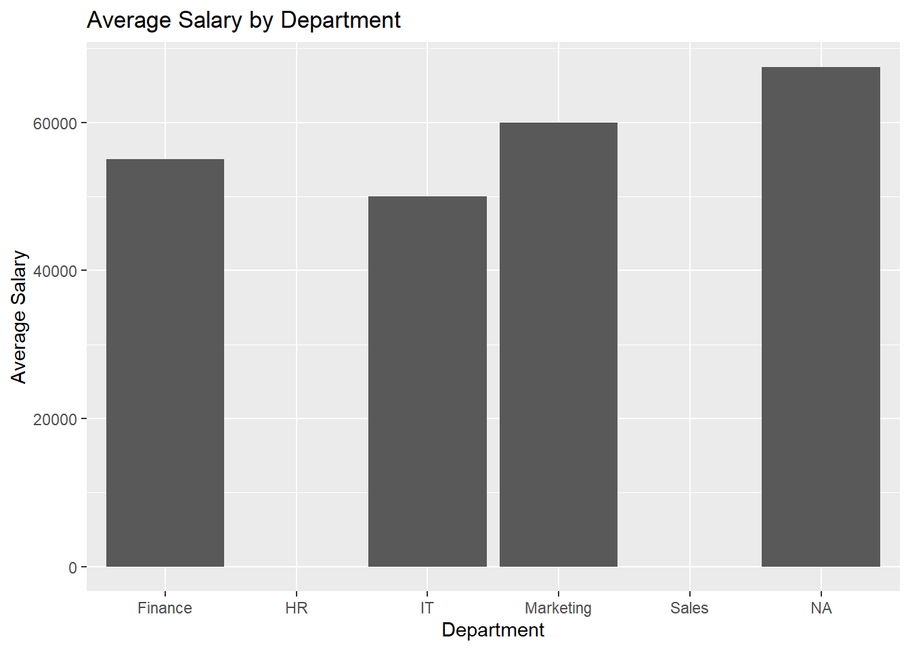

# Create your own data frames
df_employees <- data.frame(
EmployeeID = 1:5,
Name = c("Alice", "Bob", "Charlie", "David", "Eva"),
Department = c("Sales", "IT", "HR", "Marketing", "Finance")
)
df_salaries <- data.frame(
EmployeeID = c(2, 4, 5, 6, 7),
Salary = c(50000, 60000, 55000, 65000, 70000)
)
df_performance <- data.frame(
EmployeeID = c(1, 3, 5, 7),
Rating = c("Excellent", "Good", "Very Good", "Outstanding")
)Basics of Data Manipulation in R
Step 1: Creating the Data Frames
Let’s start by creating the three data frames you will use for this assignment. You’ve already provided a great example of how to create df_employees and df_salaries. I’ll add the third one, df_performance.
Step 2: Combining Data Frames
Using merge() in Base R
Base R’s merge() function allows you to combine two data frames. You can specify how you want to merge them by using the all, all.x, or all.y parameters.
# Inner join (only matching EmployeeID)
merged_inner <- merge(df_employees, df_salaries, by = "EmployeeID")
print(merged_inner) EmployeeID Name Department Salary
1 2 Bob IT 50000
2 4 David Marketing 60000
3 5 Eva Finance 55000# Full outer join (keep all rows from both data frames)
merged_full <- merge(df_employees, df_salaries, by = "EmployeeID", all = TRUE)
print(merged_full) EmployeeID Name Department Salary
1 1 Alice Sales NA
2 2 Bob IT 50000
3 3 Charlie HR NA
4 4 David Marketing 60000
5 5 Eva Finance 55000
6 6 <NA> <NA> 65000
7 7 <NA> <NA> 70000# Left join (all from df_employees, matching from df_salaries)
merged_left <- merge(df_employees, df_salaries, by = "EmployeeID", all.x = TRUE)
print(merged_left) EmployeeID Name Department Salary
1 1 Alice Sales NA
2 2 Bob IT 50000
3 3 Charlie HR NA
4 4 David Marketing 60000
5 5 Eva Finance 55000# Right join (all from df_salaries, matching from df_employees)
merged_right <- merge(df_employees, df_salaries, by = "EmployeeID", all.y = TRUE)
print(merged_right) EmployeeID Name Department Salary
1 2 Bob IT 50000
2 4 David Marketing 60000
3 5 Eva Finance 55000
4 6 <NA> <NA> 65000
5 7 <NA> <NA> 70000Using dplyr’s full_join()
If you prefer dplyr, the syntax is more intuitive, and it’s great for chaining multiple operations.
library(dplyr)
Attaching package: 'dplyr'The following objects are masked from 'package:stats':
filter, lagThe following objects are masked from 'package:base':
intersect, setdiff, setequal, union# Full join using dplyr
merged_full_dplyr <- full_join(df_employees, df_salaries, by = "EmployeeID")
print(merged_full_dplyr) EmployeeID Name Department Salary
1 1 Alice Sales NA
2 2 Bob IT 50000
3 3 Charlie HR NA
4 4 David Marketing 60000
5 5 Eva Finance 55000
6 6 <NA> <NA> 65000
7 7 <NA> <NA> 70000Using data.table’s merge()
For large datasets, data.table is often faster. The syntax is quite similar to base R.
library(data.table)
Attaching package: 'data.table'The following objects are masked from 'package:dplyr':
between, first, last# Convert to data.table
dt_employees <- as.data.table(df_employees)
dt_salaries <- as.data.table(df_salaries)
# Full join using data.table
merged_full_dt <- merge(dt_employees, dt_salaries, by = "EmployeeID", all = TRUE)
print(merged_full_dt)Key: <EmployeeID>
EmployeeID Name Department Salary
<num> <char> <char> <num>
1: 1 Alice Sales NA
2: 2 Bob IT 50000
3: 3 Charlie HR NA
4: 4 David Marketing 60000
5: 5 Eva Finance 55000
6: 6 <NA> <NA> 65000
7: 7 <NA> <NA> 70000Step 3: Handling Missing Values
After merging, there might be missing values. To identify them:
# Find employees missing salary information
missing_salaries <- merged_full[is.na(merged_full$Salary), ]
print(missing_salaries) EmployeeID Name Department Salary
1 1 Alice Sales NA
3 3 Charlie HR NA# Find salary records without employee details
missing_employees <- merged_full[is.na(merged_full$Name), ]
print(missing_employees) EmployeeID Name Department Salary
6 6 <NA> <NA> 65000
7 7 <NA> <NA> 70000Step 4: Create a Summary
Average Salary per Department
# Calculate average salary per department
avg_salary_dept <- merged_full %>%
group_by(Department) %>%
summarize(Average_Salary = mean(Salary, na.rm = TRUE))
print(avg_salary_dept) # A tibble: 6 × 2
Department Average_Salary
<chr> <dbl>
1 Finance 55000
2 HR NaN
3 IT 50000
4 Marketing 60000
5 Sales NaN
6 <NA> 67500Highest Paid Employee in Each Department
# Find highest paid employee in each department
highest_paid <- merged_full %>%
group_by(Department) %>%
filter(Salary == max(Salary, na.rm = TRUE))Warning: There were 2 warnings in `filter()`.
The first warning was:
ℹ In argument: `Salary == max(Salary, na.rm = TRUE)`.
ℹ In group 2: `Department = "HR"`.
Caused by warning in `max()`:
! no non-missing arguments to max; returning -Inf
ℹ Run `dplyr::last_dplyr_warnings()` to see the 1 remaining warning.print(highest_paid) # A tibble: 4 × 4
# Groups: Department [4]
EmployeeID Name Department Salary
<dbl> <chr> <chr> <dbl>
1 2 Bob IT 50000
2 4 David Marketing 60000
3 5 Eva Finance 55000
4 7 <NA> <NA> 70000Step 5: Challenge - Combine All Three Data Frames
# Combine all three data frames
combined_data <- full_join(merged_full_dplyr, df_performance, by = "EmployeeID")
print(combined_data) EmployeeID Name Department Salary Rating
1 1 Alice Sales NA Excellent
2 2 Bob IT 50000 <NA>
3 3 Charlie HR NA Good
4 4 David Marketing 60000 <NA>
5 5 Eva Finance 55000 Very Good
6 6 <NA> <NA> 65000 <NA>
7 7 <NA> <NA> 70000 OutstandingStep 6: Visualization
Scatter Plot of Salary vs. Performance Rating
To create the scatter plot, you can use ggplot2:
library(ggplot2)
# Scatter plot of Salary vs. Performance Rating
ggplot(combined_data, aes(x = Rating, y = Salary)) +
geom_point() +
labs(title = "Scatter Plot of Salary vs. Performance Rating",
x = "Performance Rating",
y = "Salary")Warning: Removed 2 rows containing missing values or values outside the scale range
(`geom_point()`).
Bar Plot of Average Salary by Department
library(ggplot2)
# Bar plot showing average salary by department
ggplot(avg_salary_dept, aes(x = Department, y = Average_Salary)) +
geom_bar(stat = "identity") +
labs(title = "Average Salary by Department",
x = "Department",
y = "Average Salary")Warning: Removed 2 rows containing missing values or values outside the scale range
(`geom_bar()`).
Summary
- Combining Data Frames: You practiced using different ways of combining data frames (
merge(),full_join(), etc.). Each method has slight variations, especially in handling missing data. - Handling Missing Values: You learned to identify rows with missing information.
- Summarizing Data: Calculating averages and filtering rows helps in understanding data trends.
- Visualizations: Visualizations are essential for better data insights. You learned to create scatter plots and bar plots using
ggplot2.
Feel free to experiment with more functions and methods! Each of these steps will help you become more comfortable with data manipulation and visualization in R. Happy coding!